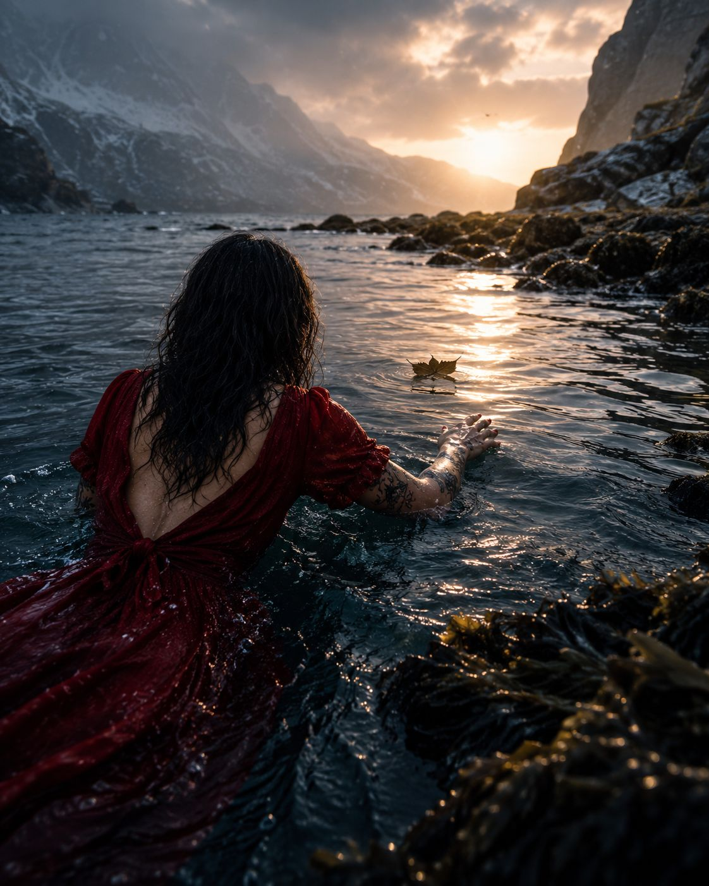

Lite blad
På ei øy langt ute i havgapet, for snart tretti år siden, var det tre ungdommer som fant ut at de skulle «låne» en båt og ro ut i midnattssola.
Da de kom langt ut, begynte den lille jolla å ta inn vann.
De var langt fra land — og havet er kaldt i nord, uansett årstid.
To av dem druknet.
Den siste overlevde.
Da han senere ble intervjuet, forsto ingen hvordan han hadde klart å svømme helt inn til land.
Da fortalte han at han hadde sett på et lite blad som lå i vannet, og konsentrert seg om det — ikke om land.
Han pustet på bladet og svømte etter det helt til han traff fast grunn og segnet om i fjæra.
Og kanskje er det litt sånn edring er også.
Personlig har jeg kavet med denne dritten i over tjue år.
Og hvis det er én ting denne kampen har lært meg, så er det at den tar tid.
Det tar tid å se sannheten for det den er.
Det er vondt å vite at jeg har et avhengighetssyndrom. At jeg er alkoholiker.
For jeg vil jo være en som kan nyte et glass vin. Ta en kald øl på trappa mens sommersola er på hell — og stoppe der.
Jeg vil ikke ha en avhengighet.
Men jeg har det.
Og det er først når jeg slutter å kjempe mot den sannheten at jeg får rom til å være meg.
Jeg er alkoholiker. Jeg kommer alltid til å være det.
Forskjellen er bare at jeg er en alkoholiker som ikke drikker.
Og når jeg klarer å stå i det valget, da først begynner jeg å komme i land.
Når jeg klarer å legge bort skammen, ønsketenkningen og illusjonen — da er jeg fri.
Nå skal ikke jeg sitte her og mene hva du skal gjøre.
For hver edring er personlig.
Selv om man går veien sammen med andre, må man likevel gå den selv. Finne sin egen vei til fjæresteinene.
Og ja — det er en kamp.
Det finnes dager der jeg ikke vil puste på det bladet i det hele tatt. Dager der jeg bare vil slippe taket og la meg synke ned i kulden.
Det er så ofte en kamp jeg ikke vil ha. Ikke vil ta.
Men som jeg likevel kjenner langt inni meg at jeg må.
For det kan jo ikke være sånn at mennesker holder seg edru i år etter år hvis det føles like vondt som i starten.
Det må vel være sånn at når man først våkner der i fjæra, så reiser man seg litt etter litt.
At kroppen husker varmen igjen.
At man begynner å leve — ikke bare overleve.
